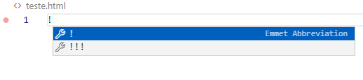

Estrutura básica de um documento HTML 5
Estrutura de um documento HTML
Ola amigos, nesse texto vamos falar sobre a estrutura de um documento HTML, formado por um conjunto de TAG’s iniciais para que possamos e escrever/desenvolver nossas páginas web, caso queira se aprofundar um pouco mais e saber o que é TAG, é só clicar aqui para conferir nosso conteúdo sobre o que são TAGS HTML.
Abaixo temos uma imagem com a visualização de uma estrutura básica em HTML:

Nota: O conteúdo dentro da seção <corpo> (área que está em branco), será exibida pelo navegador. O conteúdo dentro <titulo> será exibido na barra de título do navegador.
Temos vários editores para a escrita de códigos em HTML, e um dos meus preferidos vscode nos traz uma facilidade muito grande na hora de começarmos os nossos projetos, com duas teclas temos um documento inicial quase todo pronto para trabalharmos.
Com o editor em aberto, e um documento salvo com a extensão em html, digitamos !+Enter.

Teremos um documento inicial, necessitando de poucas adições para desenvolver as nossas páginas.

Obrigado pela visita.